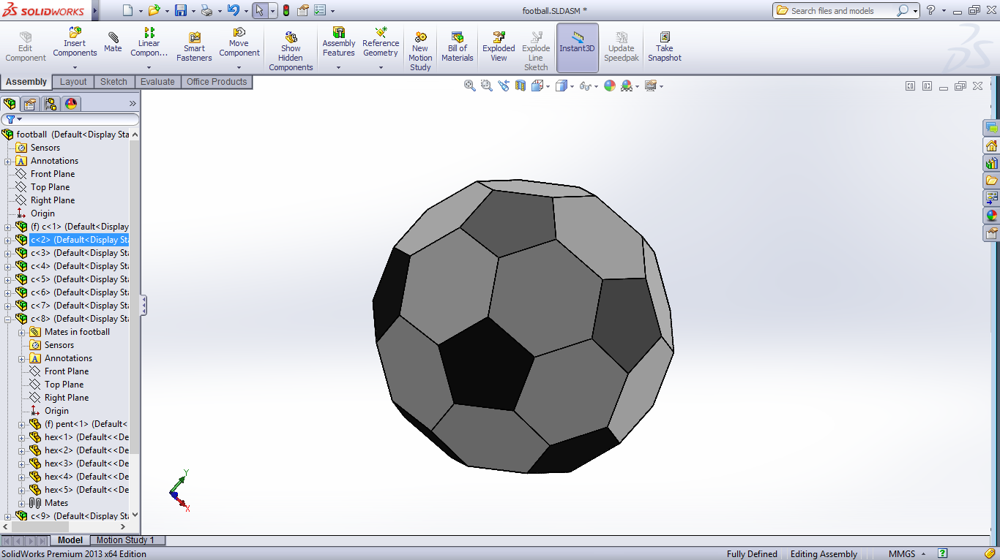

Nidhin's Portfolio
My Skills
Throughout my life I have learned and expanded my knowledge on many different subjects. This ranges anywhere from math and science, to languages and history- but where I have learned the most is in computers and technology. I have broadened my horizons when it comes to learning about programming and the millions of free useful resources you can find on the internet.
SolidWorks

SolidWorks is a 3D mechanical CAD (computer-aided design) program that runs on Microsoft Windows and is being developed by Dassault Systemes SolidWorks Corp., a subsidiary of Dassault Systemes, S. A. (Velizy, France). SolidWorks is currently used by over 2 million engineers and designers at more than 165,000 companies worldwide.
<--To your left is my sample work.
Automobile Engineering
Modern automotive engineering, along with aerospace engineering and marine engineering, is a branch of vehicle engineering, incorporating elements of mechanical, electrical, electronic, software and safety engineering as applied to the design, manufacture and operation of motorcycles, automobiles, buses and trucks and their respective engineering subsystems.
Currently I design powertrains for FSAE cars.
Astronomy
 Astronomy is a natural science that is the study of celestial objects (such as moons, planets, stars, nebulae, and galaxies), the physics, chemistry, and evolution of such objects, and phenomena that originate outside the atmosphere of Earth, including supernovae explosions, gamma ray bursts, and cosmic microwave background radiation. A related but distinct subject, cosmology, is concerned with studying the universe as a whole.
Astronomy is a natural science that is the study of celestial objects (such as moons, planets, stars, nebulae, and galaxies), the physics, chemistry, and evolution of such objects, and phenomena that originate outside the atmosphere of Earth, including supernovae explosions, gamma ray bursts, and cosmic microwave background radiation. A related but distinct subject, cosmology, is concerned with studying the universe as a whole.
I have done well in major olympiads in this field and also have practical experience.
Working With Web Technologies
HTML/CSS
 HTML or hypertext markup language is the standard markup language used to create web pages.
HTML or hypertext markup language is the standard markup language used to create web pages.
HTML elements form the building blocks of all websites. HTML allows images and objects to be embedded and can be used to create interactive forms. It provides a means to create structured documents by denoting structural semantics for text such as headings, paragraphs, lists, links, quotes and other items. It can embed scripts written in languages such as JavaScript which affect the behavior of HTML web pages.
Cascading Style Sheets (CSS) is a style sheet language used for describing the look and formatting of a document written in a markup language. While most often used to style web pages and interfaces written in HTML and XHTML, the language can be applied to any kind of XML document, including plain XML, SVG and XUL. CSS is a cornerstone specification of the web and almost all web pages use CSS style sheets to describe their presentation.
JavaScript
 JavaScript
is a dynamic computer programming language.It is most commonly used as part of web browsers, whose implementations allow client-side scripts to interact with the user, control the browser, communicate asynchronously, and alter the document content that is displayed. It is also being used in server-side programming, game development and the creation of desktop and mobile applications.
JavaScript
is a dynamic computer programming language.It is most commonly used as part of web browsers, whose implementations allow client-side scripts to interact with the user, control the browser, communicate asynchronously, and alter the document content that is displayed. It is also being used in server-side programming, game development and the creation of desktop and mobile applications.
PHP
 PHP
is a server-side scripting language designed for web development but also used as a general-purpose programming language. As of January 2013, PHP was installed on more than 240 million websites (39% of those sampled) and 2.1 million web servers. Originally created by Rasmus Lerdorf in 1995, the reference implementation of PHP is now produced by The PHP Group. While PHP originally stood for Personal Home Page, it now stands for PHP: Hypertext Preprocessor, a recursive backronym.
PHP
is a server-side scripting language designed for web development but also used as a general-purpose programming language. As of January 2013, PHP was installed on more than 240 million websites (39% of those sampled) and 2.1 million web servers. Originally created by Rasmus Lerdorf in 1995, the reference implementation of PHP is now produced by The PHP Group. While PHP originally stood for Personal Home Page, it now stands for PHP: Hypertext Preprocessor, a recursive backronym.
Programming
C
 C
is a general-purpose programming language initially developed by Dennis Ritchie between 1969 and 1973 at AT&T Bell Labs. Like most imperative languages in the ALGOL tradition, C has facilities for structured programming and allows lexical variable scope and recursion, while a static type system prevents many unintended operations. Its design provides constructs that map efficiently to typical machine instructions, and therefore it has found lasting use in applications that had formerly been coded in assembly language, most notably system software like the Unix computer operating system.
C
is a general-purpose programming language initially developed by Dennis Ritchie between 1969 and 1973 at AT&T Bell Labs. Like most imperative languages in the ALGOL tradition, C has facilities for structured programming and allows lexical variable scope and recursion, while a static type system prevents many unintended operations. Its design provides constructs that map efficiently to typical machine instructions, and therefore it has found lasting use in applications that had formerly been coded in assembly language, most notably system software like the Unix computer operating system.
C is one of the most widely used programming languages of all time, and C compilers are available for the majority of available computer architectures and operating systems.
C++
 C++
is a general purpose programming language that is free-form and compiled. It is regarded as an intermediate-level language, as it comprises both high-level and low-level language features. It provides imperative, object-oriented and generic programming features.
C++
is a general purpose programming language that is free-form and compiled. It is regarded as an intermediate-level language, as it comprises both high-level and low-level language features. It provides imperative, object-oriented and generic programming features.
C++ is one of the most popular programming languages and is implemented on a wide variety of hardware and operating system platforms. As an efficient performance driven programming language it is used in systems software, application software, device drivers, embedded software, high-performance server and client applications, and entertainment software such as video games.
I make awesome stuff like Game of life simulators in my leisure with C++
Python
 Python
is a widely used general-purpose, high-level programming language. Its design philosophy emphasizes code readability, and its syntax allows programmers to express concepts in fewer lines of code than would be possible in languages such as C. The language provides constructs intended to enable clear programs on both a small and large scale.
Python
is a widely used general-purpose, high-level programming language. Its design philosophy emphasizes code readability, and its syntax allows programmers to express concepts in fewer lines of code than would be possible in languages such as C. The language provides constructs intended to enable clear programs on both a small and large scale.
Python supports multiple programming paradigms, including object-oriented, imperative and functional programming or procedural styles. It features a dynamic type system and automatic memory management and has a large and comprehensive standard library.
 Astronomy is a natural science that is the study of celestial objects (such as moons, planets, stars, nebulae, and galaxies), the physics, chemistry, and evolution of such objects, and phenomena that originate outside the atmosphere of Earth, including supernovae explosions, gamma ray bursts, and cosmic microwave background radiation. A related but distinct subject, cosmology, is concerned with studying the universe as a whole.
Astronomy is a natural science that is the study of celestial objects (such as moons, planets, stars, nebulae, and galaxies), the physics, chemistry, and evolution of such objects, and phenomena that originate outside the atmosphere of Earth, including supernovae explosions, gamma ray bursts, and cosmic microwave background radiation. A related but distinct subject, cosmology, is concerned with studying the universe as a whole.
{kind=link}
{kind=link}